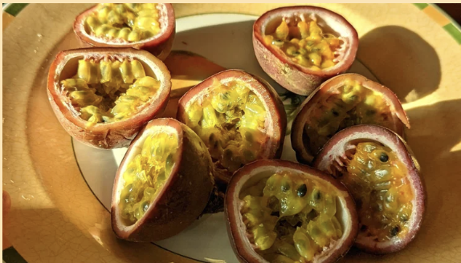
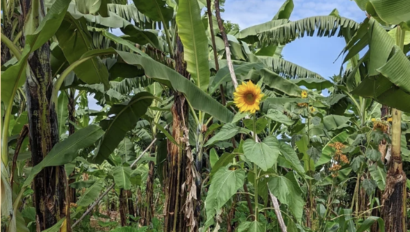
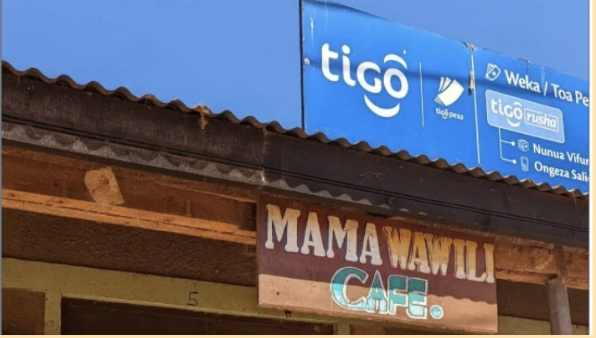
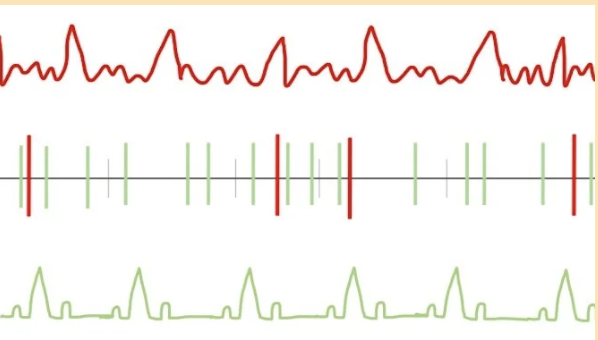
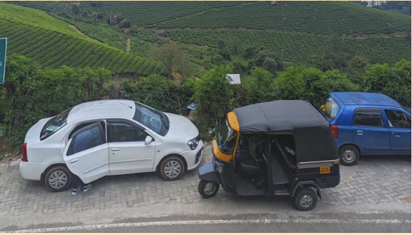

During my PhD, I've built, contextualized and scaled technologies that support marginalized people working in Health & Agriculture.

No imageSurveyed 1,014 households in rural Tanzania to understand smartphone and feature phone adoption, use, and comfort in rural communities. CHI '24 publication here in collaboration with Cornell Economics & IRDP.

No imageDesigned, developed and deployed eKichabi v2, a searchable, lightweight, offline directory of agriculture-related enterprises accessible via USSD and Android to 10,000 farmers in rural Tanzania. CHI '24 publication here in collaboration with Cornell Economics & IRDP.

No imageRan focus groups with mobile money agents to outline the infrastructure needed to repurpose their intermediation skills to serve any digital public good. Then, piloted their intermediation of eKichabi v2. COMPASS '23 paper here in collaboration with IRDP.
Ran focus groups with 49 smartphone-supported entrepreneurs in periurban Tanzania to understand how they started and grew new businesses with the help of their smartphones. CHI '22 publication here.
The first contactless system that determines fluid properties using LiDAR sensors on a modern smartphone. Analyzes laser speckle patterns via Brownian motion to assess blood coagulation — no additional hardware required. UbiComp '22.

No imageUses portable 6-lead ECGs with AI models to predict atrial fibrillation within a 60-day window — aligning with CHW visit schedules and surpassing typical cardiologist diagnostic capability. Cardiovascular Digital Health '23.
Assesses alignment between government health system visions for AI tools and practical implementation realities in LMICs, developing a framework to evaluate feasibility and human impact. Forthcoming.
Examines shifting patient preferences away from overprescribing chatbots through nudging interventions. Phase 1: 54% of participants preferred the overprescribing bot. Phase 2: demonstrated preference shifts toward clinically-validated responses. Under submission.

No imageInvestigates how various large language models handle health information queries in Indic languages and Indic English, focusing on failure points and evaluation strategies. In progress.